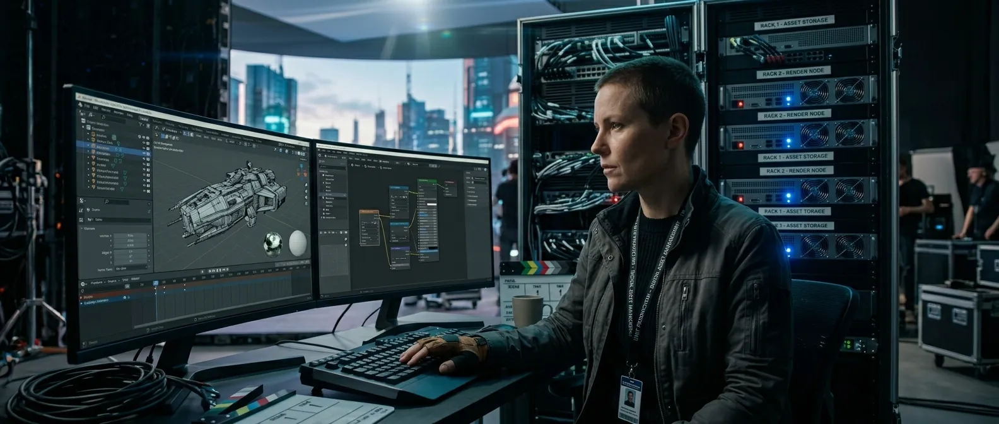
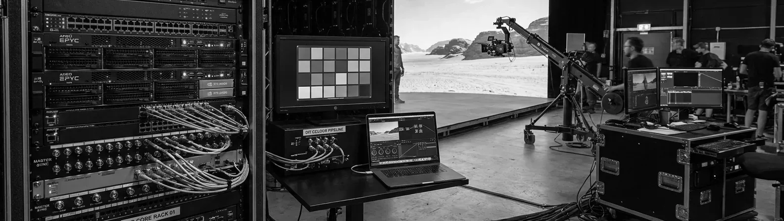

Server Playback Loaded, synced, ready to roll.

Media servers for plates, environment loops, multi-wall sync. DIT-compatible colour pipeline from ingest to output. We run the servers so you can focus on the shot.
Content loaded. Cues set. Timecode locked. When the DP asks for a different sky, it's a server recall, not a re-render. When the director wants to see the sunset version, it's a button press. The server is prepped with every asset before day one.
Our colour pipeline is DIT-compatible from the start. What goes into the server is what comes out on the wall, and what the camera sees matches what the colourist expects in post.
Recall, not re-render.
The server is the quiet layer that makes a volume or a driving plate behave on the day. Every asset is loaded and every cue is set before day one, so when the DP asks for a different sky or the director wants the sunset version, it is a recall and a button press, not a re-render and a wait. The set keeps moving.
Clean to the cart.
The colour pipeline is DIT-compatible from ingest to output, so what goes into the server is what comes out on the wall, and what the camera sees matches what the colourist expects in post. Timecode and genlock keep it locked to the rig, and on a multi-camera day it feeds the per-camera views that frame remapping needs. Rec.709, Rec.2020, ACES-ready, with an operator on the cart.
Common questions
Before you spec the playback.
Which media servers do you stock?
disguise (the VP standard), Resolume, ArKaos MediaMaster. Spec depends on the workflow.
Can you handle multi-wall sync?
Yes. Plates, environment loops, and multiple displays sync frame-accurately.
What about the DIT?
Our colour pipeline is DIT-compatible. Your DIT cart sees a clean signal — Rec.709, Rec.2020, ACES-ready.